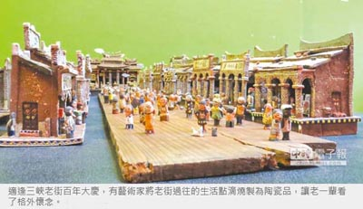

藝術之旅
三峽李梅樹月 轉角遇見大師
延續無牆美術館概念 打破藝術與民眾的藩籬
謝幸恩｜中國時報／北部新聞｜2016年3月13日

「來三峽，品嘗時間的滋味。」三峽李梅樹月12日起跑，延續近年「無牆美術館」概念，藥房、咖啡館、米糧行處處可見大師原作，新銳藝術家也結合三峽老街百年慶向大師致敬，用藝術說土地的百年歲月，也打破藝術與民眾的藩籬。
活動串連12處據點，如歷史文物館、三峽教會、福久米糧、元春大藥房、成福煤礦等，共有43位藝術家參與，設計不同主題的導覽路線、書展、紀念音樂會。
民眾若一口氣走完12處據點，恐怕會「鐵腿」，不妨以「連續劇」的方式來造訪12處據點，第一站先到歷史文物館了解歷史脈絡，再轉至三峽教會認識社區營造，最後來到福久米糧、老柴咖啡館，一睹新、舊文化撞擊出的美麗火花。
李梅樹紀念館執行長李景文說，三峽今年適逢「3個百年」，三峽老街100歲、三峽教會設教140年及成福煤礦開礦100年，日本「炭坑礦師」山本作兵衛581幅畫作登錄為世界記憶遺產，大師出借38幅，讓民眾理解台、日礦場文化差異。
此外，許多藝術家也將三峽人文、李梅樹印象融入作品，如土生土長的藝術家林曉薇，以100隻編織蝴蝶象徵百年老街，中心為代表希望的藍染燈柱，百隻蝴蝶圍繞著燈柱飛舞，象徵老街的蛻變。
小學老師許晏豪則以陶「造鎮」，打造袖珍Q版老街，連三峽祖師廟也推出「復刻版」，燒製出老一輩生活點滴，濃厚「古早味」，讓許多鄉親看了備感窩心，一旁也有阿公、阿嬤的畫作，一筆一畫描繪兒時的三峽、如今的三峽、百年的三峽。
擅長詮釋歷史故事的漫畫家杜福安，將馬偕牧師來到三角湧傳教，慘遭當地鄉親丟擲石塊的歷史巧妙融入，敘述其在228動亂時期安定三峽的付出。李梅樹即日起展至4月24日止，結束後將也將進行校園巡迴展，延伸美學理念。